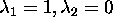
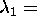
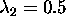
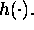
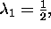
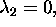

We ran numerical experiments for several parameters which were preliminary selected on the basis of some theoretical ideas. For the type of purely individualistic agents it is easy to show that, ceterus paribus, the higher value of parameter Q the higher the reward to choosing action a=2. Similarly, for individuals that are conformists, that is, for those who pay a lot of attention to the actions of others, the value of average reaction provides higher value of individual action.
We started our simulations by disallowing the stock of clapping to have an effect on the actions chosen by the agents and, bysetting  ; and by choosing different values of Q . For Q=1 the average level of action was about 0.3, while for Q=2 it has increased up to 0.6. The noise was also present, because of probabilistic actions, but there was no trend over time. This result is in accordance with theoretical predictions, because the pure individualistic type does not interact with the audience, and his information set does not evolve over time.
In the next set of simulations   were chosen; this suggests that all agents are of a mixed type -partly individualistic and partly conformistic. For low values of quality (Q=1 and Q=2) a descent in the level of applause was observed. This suggests that the minority of relatively high perception type have started clapping, but after observing that few are doing this, quit at later stages. For high quality, Q=3, a cascade was observed: the average action was an increasing function of time.
More interesting results were discovered for higher level of conformism (20% individualism versus 80% of conformism). In this case the cascade effect was taking place even for low level of quality (everywhere between Q=0.4 and Q=3). But for very low quality (Q=0.2) no action was observed. This result suggests that ovation is highly nonlinear in quality on massively conformistic audiences, therefore suggesting that the ovation does not measure the real quality of the lecture or play, but instead the complex interaction between the individuals in the auditorium and Q.
Finally, when we allow the stock of clapping to have an effect on the actions chosen by the individuals the desired effect is observed, that is, ovations cease after a while even for high quality events and without neighborhood effects besides those that permeate the function  In particular, we ran experiments with   Q=3, and obtained the results described above.